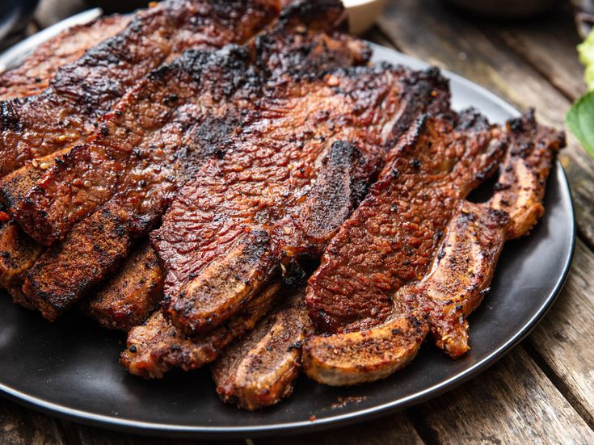

Lasagna

Description
Beef galbi is one of the iconic cuts of meat used in Korean barbecue.
"Galbi" (or "kalbi") translates from Korean as "ribs," and in the United
States this term has become synonymous with beef short ribs, usually cut
cross-wise through the rib bones to produce long, thin pieces of meat that
are attached on one side to cross-sections of bone (usually three per
piece). This cut is often referred to as "LA-style" for Korean barbecue
(at butcher shops that use Western European butchery terms, this cut is
known as "flanken-style"), as it was popularized by Korean immigrants in
Los Angeles.
The short ribs are marinated in a soy sauce-based mixture that gets an
allium punch from garlic, onion, and scallions, and is sweetened with
brown sugar and Asian pear. Black pepper and toasted sesame oil balance
out the marinade's sweet and savory notes. The short ribs are quickly
grilled over high heat, and then served with Korean garnishes and staples
like steamed rice, ssamjang for dipping, lettuces and perilla leaves for
wrapping, and banchan for snacking.
Ingredients
- 1 medium onion (about 7 ounces; 200g), cut into 1-inch pieces
-
1 Asian pear (about 6 ounces; 170g), peeled and cut into 1-inch pieces
(see note)
- 5 garlic cloves (25g)
-
1-inch piece (1/2 ounce; 14g) fresh ginger, peeled and cut into 1/4-inch
pieces
- 1 cup (240ml) soy sauce
- 1/2 cup (120ml) water
- 1/4 cup (50g) packed brown sugar
- 2 tablespoons (30ml) mirin
- 1 tablespoon (6g) freshly ground black pepper
- 4 scallions (80g), thinly sliced
- 2 tablespoons (30ml) toasted sesame oil
- 2 tablespoons (12g) toasted sesame seeds, lightly crushed
-
3 pounds (1.4kg) flanken-style beef short ribs, about 1/2-inch-thick
(see note)
Steps
-
For the Galbi:Combine onion, Asian pear, garlic, and ginger in
the bowl of a food processor and process to a coarse purée, scraping
down sides of food processor bowl as needed, about 30 seconds. Stop
processor and add soy sauce, water, brown sugar, mirin, and black pepper
to food processor bowl. Continue processing until liquids and sugar are
well-combined with vegetables, 15 to 30 seconds longer. Transfer mixture
to a medium bowl, and stir in scallions, sesame oil, and sesame seeds.
-
Place beef in a gallon zipper-lock bag or large baking dish, and pour
marinade over the short ribs. Toss to evenly distribute the marinade,
then seal bag, removing as much air as possible (if using baking dish,
wrap tightly with plastic wrap). Transfer short ribs to refrigerator,
and marinate for at least 1 hour and up to 24 hours.
-
Light one chimney full of charcoal. When all the charcoal is lit and
covered with gray ash, pour out and arrange the coals on one side of the
charcoal grate. Set cooking grate in place, cover grill, and allow to
preheat for 5 minutes. Alternatively, set half the burners on a gas
grill to the highest heat setting, cover, and preheat for 10 minutes.
Clean and oil grilling grate.
-
Remove short ribs from marinade and wipe off excess. Place directly over
the hot side of the grill. If using a charcoal grill, leave uncovered;
if using a gas grill, cover. Cook, turning occasionally, until beef is
cooked through and lightly charred on both sides, 6 to 8 minutes total
(3 to 4 minutes per side). Transfer to a serving platter and allow to
rest for at least 2 minutes before serving.
-
For Serving: Serve short ribs immediately with a pair of
kitchen shears on-hand for cutting the meat off the bone and into
bite-size pieces. Pass ssamjang, lettuces, garnishes, and banchan at the
table.
- Garnish with parsley before serving.